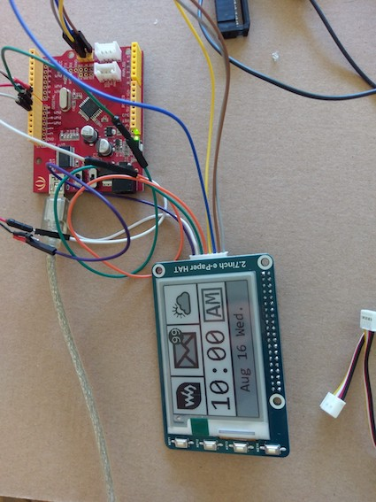
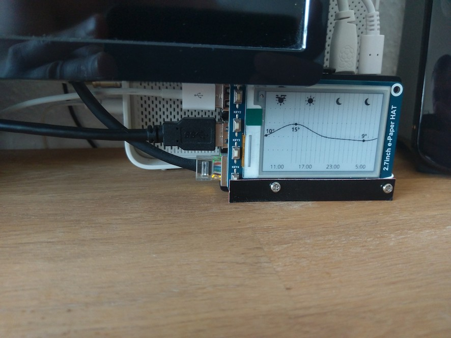
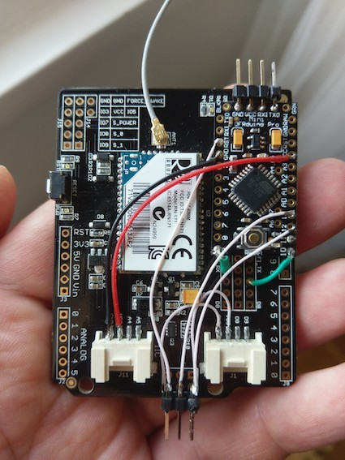
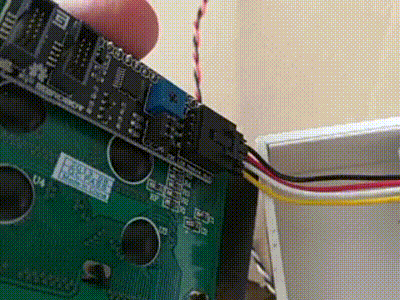
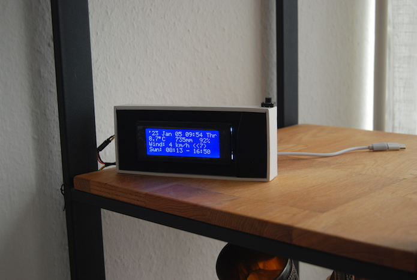

Weather forecast station
Augment a standard Raspberry Pi with a e-Paper display (here, tested with Arduino):

With a bit of a primitive python code, pulling forecast graph and rendering it on e-Paper display, the final result looks like this:

Wireless back-end for the external display consists of WiFly development board with a small Arduino board that I have mounted on top:

All together with a 20x4 LCD display it happened to fit well in some random box:

Final result looks as follows:
